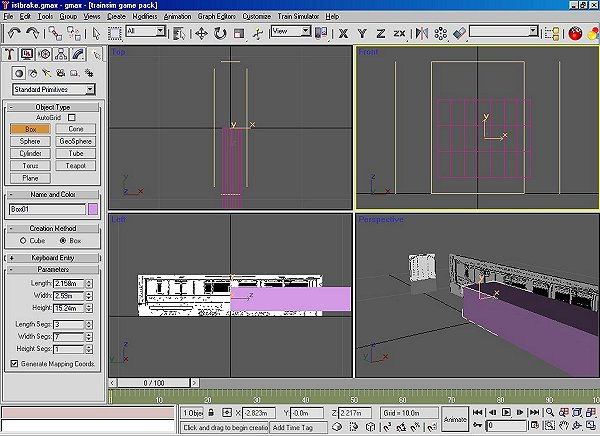
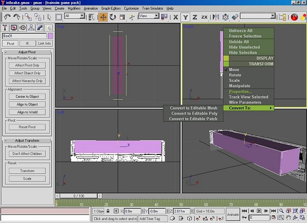
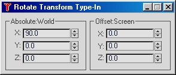
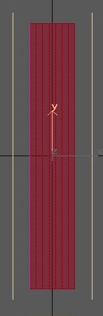
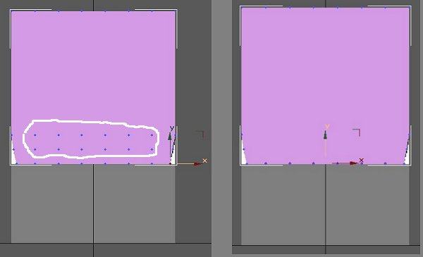
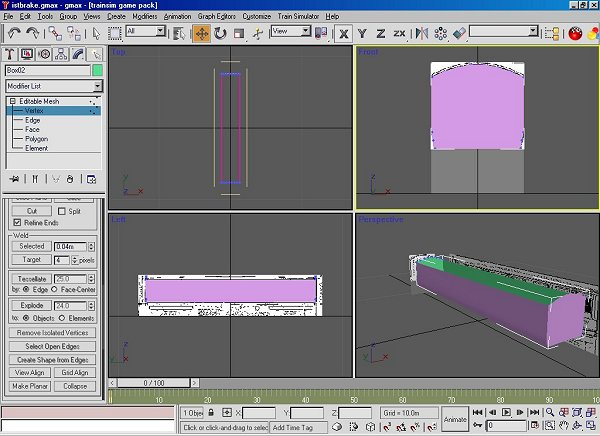
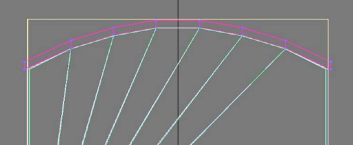

A Coach Made With GMax
by Richard Osborne
Chapter 4: Modelling For Real
Believe it or not we've described most of our initial techniques. The next thing to cover is working in point mode, then we'll have covered 80%.
We're going to texture as we go. Both texture & model files tend to be very dynamic when I model. In other words I keep moving things, texture files can be an absolute mess but you won't find wasted space! The main advantage is to be able to export the model & view it with Shape File Viewer as soon as there's anything to see. The .s file must have .ace files which will be in the project directory.
Which shall we make first? Let's make the first body parts.
A few minutes with a pen & paper first to decide what sort of box to make. The coach has an arc roof & sides which are straight down to the bottom moulding then turn in so I'm going to use a box which has 7 horizontal divisions & 3 vertical. This will have a huge number of polygons to begin with; I'll show you how to reduce the count. We must keep the polygon count to the absolute minimum; the maxim is - if it doesn't show it shouldn't be there.
Use the converter to establish the sizes, the plan shows 6' 9" x 8' 6" x 50' for the main body. Using the same technique as for the calibration box, make & centre it; move it vertically aligning it to the endview. We can double check it later.


Notice the height relates to the length, the axis orientation is wrong. I found how to change the orientation after a Webb locomotive appeared dormant across the tracks. It might be that only the 'main' part has to corrected but we might as well make sure every part is the same. Make sure the part is active, click the hierarchy button & 'Affect Pivot Only'. Go to the top toolbar & click the 'Rotate' button. Keep the mouse over the button & right click, a screen will appear.

Change the values so that all read 0. If you read Volker Bollig's diesel tutorial you'll see he uses these drop down screens much more than I do; I prefer using the windows at the bottom of the screen which is the same system as Turbocad.
Next to do is a little shaping & losing most of the polygons.
In 'polygon' mode, top view, highlight the polygons leaving only the sides & ends. Press 'Delete'. 16 polygons gone!
Now we're going to work in 'Point' mode. Make your end view bigger, you can drag the viewpoint frames with the mouse. Press 'Select & Move' on the top toolbar. Drag the lines of points down to the curved part of the body. Move the bottom ouside points to meet the plan. when you drag a point you'll see a value appear in a bottom window. If you drag one side .05, drag the other -.05, the 2 points will be symetrical. You can also click on 1 point, the X value might be 1.245. The opposite point should be -1.245, if you have a different value just write in the preferred value & click the neighbouring window. With a little practice both ways are very quick.

When you're happy with the shape we'll lose some more polygons. Drag the points indicated in white down to the bottom line. We need to weld them together. Lassoe them with the mouse - they'll turn blue to red. Scroll down the side panel until you come to 'Weld'; 'Selected' defaults to 0.1m, far too big & I haven't found how to change the default setting, use the arrows to bring the value down to 0.01m. Press 'Selected' with luck the '36 Vertices Selected' will change to '12 Vertices Selected'; if not increase the size of the weld. Now drag the points to the left corner. If you press F3 then F4, in wireframe you'll see the polygons merge. Press 'Selected', you see '2 Vertices Selected'. It's almost certain to have moved a bit. You haven't touched the other corner so write down its co-ordinates & correct the corner you've just welded.
Turn your attention to the top. The simplest way here is to drag the line of points down to the base of the arc, take the points 1 row inside & pull them up to the drawing, work inside until you have the arc. We might as well do a double check, the base should, according to the drawing be 4' above rail level. Measure a base line point & move the body if needed.

Check you body in 'Perspective' view. We won't need it yet but we'll make the inside for the body. Make the body active but not in 'Edit' mode; the simplest way is to press the 'Create' button - the arrow. Go to 'Edit' on the top toolbar, then 'Clone'; left click & an options window appears. Alter the name & click 'OK'. A clone is an exact copy, in this case it has little information; if the body were textured the clone would be textured, we'll use this later. Make the inside part active, change the colour, go to 'Point' mode & drag the sides & ends inside the outer body, only about 0.020m. 'Polygon' mode, make all polys active & 'Flip' them. You'll see both inside & outer body parts.

Go back to 'Create, make a box 7 across for the roof, pull the outside edges out a bit & drag it down to the body.

Apologies for the colours, I did most of the screen shots away from home on a computer with a very iffy monitor.
Make a simple box for the 'main' part. I use the solebar (the main frame under the body) for this, although not strictly necessary it's easiest to use a symetrical part for your 'main' part. You'll only need the side faces, centre the axis then using 'Affect Pivot Only' & 'Select & Move' bring the Z axis to down to 0.